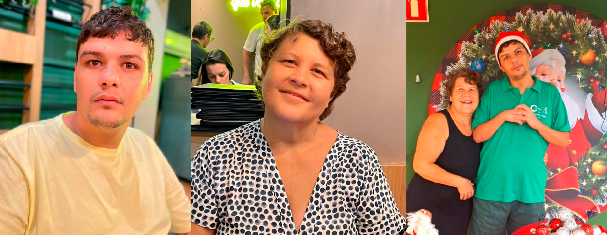

CAEDI - Uma História de Amor, Luta e Esperança
Nossa história começou com o amor de uma mãe por seu filho.

Sou Aracelis Sarro dos Santos, mãe do Gustavo Sarro dos Santos, hoje com 35 anos, uma pessoa com deficiência intelectual. Durante muitos anos, enfrentei dificuldades na busca por tratamentos, acompanhamento especializado, inclusão e oportunidades para meu filho. Foram momentos de angústia, portas fechadas e falta de apoio. Essa caminhada despertou em mim um sentimento muito forte: nenhuma mãe deveria enfrentar essa luta sozinha. Comecei a pensar em tantas famílias que, assim como a minha, enfrentam dificuldades para conseguir atendimento para seus filhos, principalmente aquelas que não possuem condições financeiras para pagar tratamentos particulares. Foi então que decidi transformar minha experiência em uma missão de amor. Convidei outros pais que compartilhavam das mesmas dificuldades e dos mesmos sonhos. Juntos, começamos a construir um projeto que pudesse oferecer acolhimento, respeito, inclusão e oportunidades. Assim nasceu, em 16 de fevereiro de 2021, o CAEDI - Centro de Apoio em Excelência à Deficiência Intelectual, na cidade de Dracena, São Paulo.
Nossa missão
O CAEDI é uma associação sem fins lucrativos que tem como propósito acolher e apoiar crianças com autismo (TEA), deficiência intelectual, TDAH, dificuldades de aprendizagem e outras necessidades de apoio ao desenvolvimento. Por meio de uma equipe multidisciplinar e de atividades educacionais, buscamos estimular as habilidades, a autonomia, a inclusão e a qualidade de vida de cada criança. Nosso compromisso é olhar para cada criança com amor, respeitando seu tempo, suas dificuldades e, principalmente, suas potencialidades.
Nosso compromisso social
Sabemos que muitas famílias enfrentam dificuldades financeiras e não conseguem oferecer aos filhos todos os tratamentos de que necessitam. Por isso, um dos grandes objetivos do CAEDI é ampliar o acesso ao atendimento especializado, especialmente para crianças de famílias em situação de vulnerabilidade social. Acreditamos que o desenvolvimento de uma criança não pode depender apenas das condições financeiras de sua família.
Um sonho que precisa de muitas mãos
O CAEDI continua crescendo e sonhando com um futuro em que mais crianças possam receber atendimento especializado, apoio educacional e oportunidades de desenvolvimento. Para tornar esse sonho possível, buscamos parcerias com empresas, voluntários, órgãos públicos e pessoas que acreditam na inclusão. Cada doação, parceria ou gesto de solidariedade representa uma oportunidade de transformar vidas.
O que começou com a luta de uma mãe hoje representa esperança para muitas famílias.
Nossa mensagem
Não podemos mudar todas as dificuldades que nossos filhos enfrentam, mas podemos construir caminhos para que tenham mais oportunidades, respeito, dignidade e inclusão.